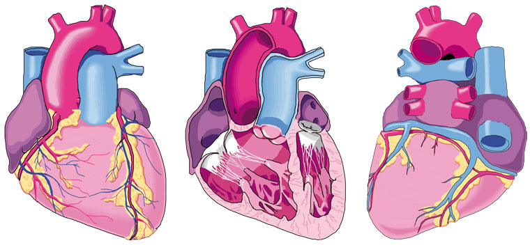
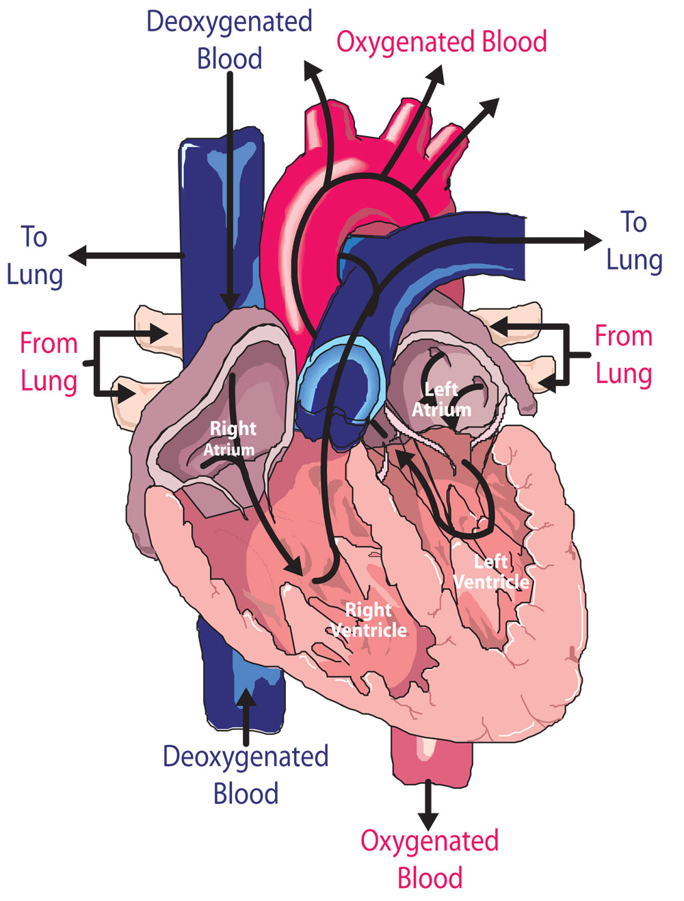
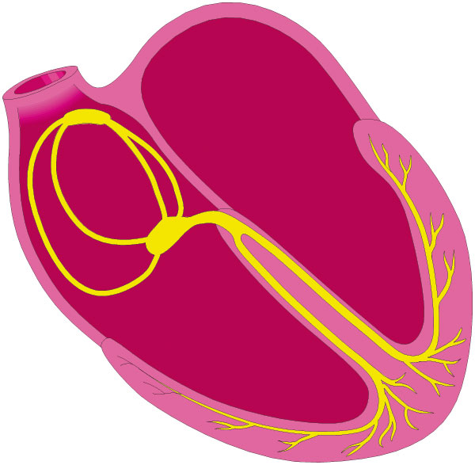
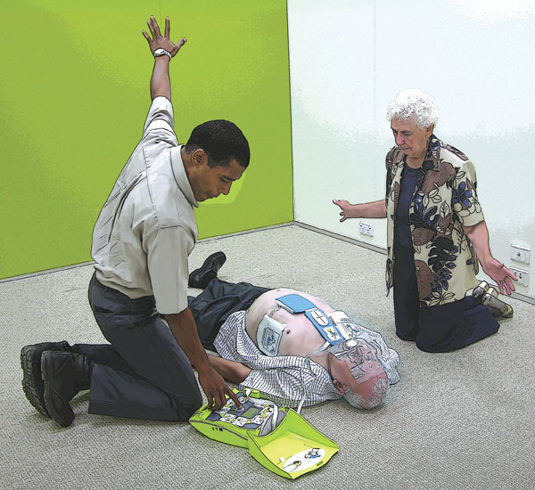
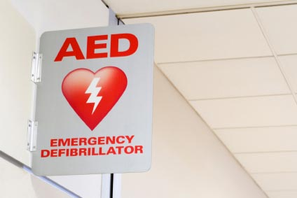
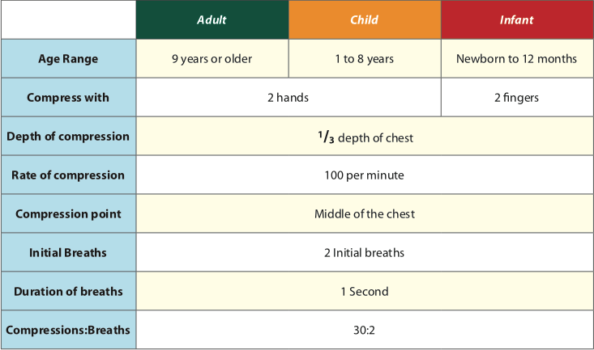

Automated External Defibrillation
Automated External Defibrillation
The heart is a muscular pump, approximately the same size as its owner's fist, and is located behind and slightly to the left of the breastbone. Its function is to pump oxygen-rich blood from the lungs to various parts of the body, and to pump the de-oxygenated blood from the tissues back to the lungs to take on more oxygen. Pumping blood through the lungs removes carbon dioxide and resupplies the blood with oxygen. The newly oxygenated blood is then pumped around the body to provide oxygen and nutrients and remove waste products.

Views of the Heart - Front, Inside and Rear
The heart's mechanical action
The heart has four chambers with one-way flaps called valves between the upper and lower chambers. The atria are the upper chambers and they receive blood that is being returned to the heart.
When the atria pump (contract), they push the blood through valves into the relaxed ventricles (lower chambers). When the ventricles contract, the right ventricle pumps blood into the lungs. It is the pressure of the blood reflected on the walls of the arteries which is felt as a pulse.
A normal healthy adult heart beats rhythmically at a rate of about 60 to 100 beats a minute when at rest. During strenuous exercise, the heart can increase the amount of blood it pumps up to four times the amount it pumps at rest within only a matter of seconds.

The heart's electrical system
The heart's electrical system causes the heart to beat, controls the heart rate (the number of beats per minute).
Given an electrical signal, the upper heart chambers (atria), contract (pump) and then relax and then passes down the separating tissue to the ventricles, causing them to contract and pump blood to the body. After the ventricles complete contracting, the electrical impulses cease, and the heart muscle relaxes.
Sudden Cardiac Arrest (SCA)
Sudden cardiac arrest is the unexpected collapse of a casualty whose heart has ceased to function due to an electrical malfunction of the heart, disrupting that muscle's normal rhythm. SCA is not a heart attack, which is a problem with the plumbing of the heart. In a heart attack one or more of the arteries delivering blood to the heart is blocked, so oxygen in the blood cannot reach the heart muscle and the heart muscle is damaged.
During sudden cardiac arrest, the electrical signals to the pump suddenly become erratic. The ventricles may flutter or quiver (ventricular fibrillation), and so blood is not delivered to the body. Blood flow to the brain is reduced and the casualty loses consciousness. Death will follow unless emergency treatment is begun.
Cardiac arrest is closely linked with sudden chest pain. During SCA the heart twitches irregularly, most often in adults due to ventricular fibrillation (VF), and cannot pump oxygenated blood efficiently to the brain, lungs, and other organs. The casualty quickly stops breathing and loses consciousness.
There are no prior symptoms of sudden cardiac arrest. However, risk factors have been identified as increasing the potential for sudden cardiac arrest. Risk factors include:
 Family history of sudden cardiac arrest
Family history of sudden cardiac arrest
 Heart failure (heart pumps poorly)
Heart failure (heart pumps poorly)
 History of heart rhythm disorders
History of heart rhythm disorders
 Previous heart attack
Previous heart attack
 Previous sudden cardiac arrest episode
Previous sudden cardiac arrest episode
Successful resuscitation of such a casualty depends on quick decisive action taken in sequence, like the links in a chain.
Defibrillation pads
Defibrillation pads are soft, thin foam about the size of a hand. The pads are adhesive and have a layer of gel which helps pick up the electrical signals. They normally have a cable attached to each pad. Normally a set is packaged in a special sealed pouch. As they can 'dry out', they have an expiry date printed on the package.
Pads must adhere firmly to the chest, so it is important to press the pads on firmly, including the edges of the pads.
Pads may not stick securely for several reasons. These include moisture and excessive hair on the chest. Moisture can be wiped away with a towel or cloth. You may need to clip or shave excessive hair off the chest around the pad area.
Each AED manufacture will have the instructions for applying the pads on the pad packaging and on the pads themselves. Follow these instructions as they will apply directly to the AED that is being used.
Procedure for administering an AED
 send someone for the AED if not already done
send someone for the AED if not already done
 ensure safety
ensure safety
 If two rescuers are present, assign tasks for each rescuer
If two rescuers are present, assign tasks for each rescuer
 turn on the AED
turn on the AED
 attach the electrode pads
attach the electrode pads
 if multiple rescuers, continue CPR while the pads are attached
if multiple rescuers, continue CPR while the pads are attached
 follow the voice/visual prompts of the AED
follow the voice/visual prompts of the AED
 ensure that nobody touches the casualty while the AED is analysing the rhythm
ensure that nobody touches the casualty while the AED is analysing the rhythm
If a shock is indicated:
 ensure that nobody touches the casualty
ensure that nobody touches the casualty
 say 'Stand Clear'
say 'Stand Clear'
 check nobody touching casualty
check nobody touching casualty
 push the shock button as directed
push the shock button as directed
 fully-automatic AEDs will deliver the shock automatically
fully-automatic AEDs will deliver the shock automatically
 continue to follow the voice/visual prompts of the AED
continue to follow the voice/visual prompts of the AED
If no shock is indicated:
 immediately resume CPR using a ratio of 30 compressions to 2 rescue breaths
immediately resume CPR using a ratio of 30 compressions to 2 rescue breaths
 continue to follow the voice/visual prompts of the AED
continue to follow the voice/visual prompts of the AED
Safety
An AED, just like any electrical appliance, has safety precautions to prevent injury. The AED operator is responsible for keeping all persons from touching the casualty when a shock is delivered.
 State a 'Clear' message. For example, say loudly "don't touch the casualty"or "Stand Clear"
State a 'Clear' message. For example, say loudly "don't touch the casualty"or "Stand Clear"
 Look to ensure that no one is touching the casualty before pressing the shock button
Look to ensure that no one is touching the casualty before pressing the shock button
Beware of Implants
If a casualty has an electronic pacemaker or cardioverter implanted under the skin, ensure that the AED chest pad is positioned at least 10cm away from the pacemaker.
Ensure that the pads are not placed over a Glyceryl Trinitrate patch (GTN).
Beware of Gaseous or Oxygen-rich Environments
Defibrillators can cause sparks. If using oxygen to supplement resuscitation, ensure that there is no concentration of oxygen around the casualty's chest. Ensure that there is no build up of other gases around the scene.
Beware of Water
Do not use an AED if the casualty or the surroundings are saturated with water. Water is an effective transmitter of electricity and the shock may be transmitted to the AED operator.
Separate the Electrodes
Don't put or place the electrodes or connected pads together, or allow them to touch if the AED is 'on'. This may complete a circuit and cause an electrocution.
The AED should never be connected to anyone other than a casualty in cardiac arrest, nor should an AED be attached to a person for training or demonstration purposes.
A sign should be used to indicate the location of the AED.
Resuscitation Summary Chart
